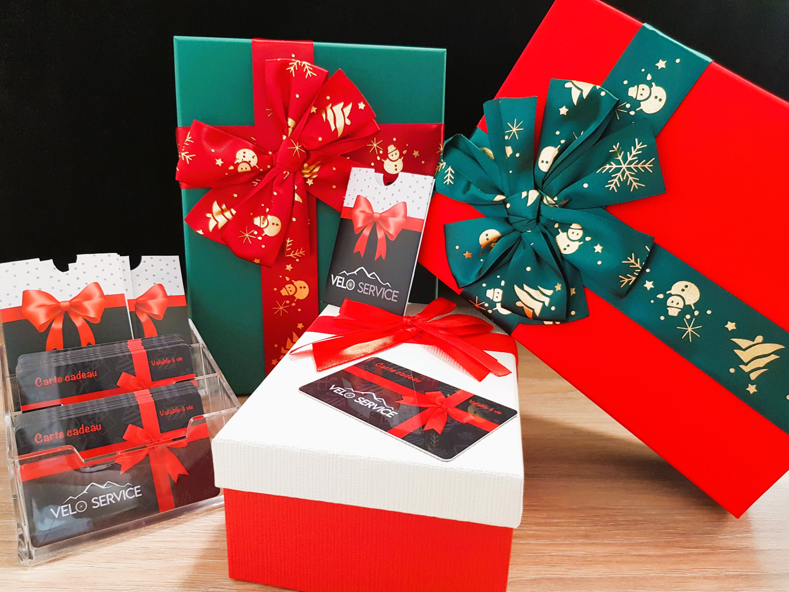

Découvrez nos vêtements de cyclisme Homme et Femmes.
Cuissards,maillots, vestes, gilets, tour de cou, chaussures, gants...
Il y en a pour tous
les goûts.
Nous vous proposons une large gamme de composants et pièces
détachées. Pédales, poignées, chambres à air, pneus, sonnettes, plaquettes et patins de
frein...
Et évidement si vous ne trouvez pas votre bonheur, nous le commanderons.
Parce que rien n'est plus important que votre
sécurité,
Nous vous proposons de nombreux modèles de casques,
adaptés à toutes
les pratiques.
Faites plaisir sans vous tromper. Offrez la carte cadeau Velo service. Vélos, accessoires, location, réparation, la carte cadeau est l'occasion rêvée de faire plaisir à votre entourage. Et surtout ? Elle est valable à vie.
Retrouvez une large gamme de vélos de route, VTT, Gravel, Trail,
Enduro, electrique, ville, enfant...
En tant que revendeur agrée par l'AUE, nous sommes
habilités à vous faire béneficier de l'aide à l'achat d'un vélo à
assistance électrique.
Cette aide vous donne droit sous certaines conditions à une remise de
25% du prix du vélo plafonnée à 500€. Réduction effectuée directement en magasin, donc sans
avance.
N'hésitez pas à prendre contact avec nous pour plus d'informations.
Nos marques de vélo
La marque Massi a commencé à être commercialisée à la fin des années soixante-dix avec
une
large
gamme de produits qui englobe des composants comme des chaines, pedaliers, cassettes ou
des
bielles, et des accessoires tels que des
chaussures, des casques de cyclisme, des vêtements ou des lunettes, et bien sûr des
vélos.
En 1997, l'entreprise a mis en marche le concept CM Center, en initiant les premières
exportations, jusqu'à aujourd'hui.
Actuellement, Massi est toujours une entreprise de nature familiale, présidée par la
seconde
génération et là où est
intégrée la troisième génération dans ses organes directifs.
Massi est présente avec une distribution propre en Espagne, en Angleterre, en France, en
Belgique, en Andorre et au
Portugal, et elle compte aussi sur des distributeurs et des points de vente en Amérique
et
en
Asie.
Massi dispose d'un large stock de type de produits pour vélo et est considéré comme l'un
des
meilleurs artisans du monde
et comme le créateur du concept knit.
Au cours des dernières années, Massi s'est investi dans le développement de produit sous
les
paramètres qui marquent les
besoins du monde de la compétition. Toute la technologie développée pour réussir le
Championnat
du Monde a été appliquée
à de nouveaux modèles de vélos comme de composants et d'accessoires.
Depuis plus de 25 ans, Polygon Bikes conçoit et fabrique des vélos de classe mondiale en
partenariat avec des
ingénieurs, des designers industriels, des penseurs créatifs et des cyclistes
professionnels
basés en Amérique du Nord,
en Europe et en Asie.
Nous sommes passionnés par l'innovation et travaillons dur
chaque
saison pour produire des designs
frais et authentiques avec une pertinence mondiale.
Nous sommes l'une des rares
marques
mondiales de vélos à posséder
nos installations de fabrication, ce qui nous permet de contrôler tous les aspects du
processus
de fabrication, du
savoir-faire du soudage à la main de nos cadres jusqu'à nos installations d'assemblage
et de
peinture à la pointe de
l'industrie.
En produisant près d'un million de vélos par an, cela nous permet
également
de
tirer parti d'importantes
économies de coûts que la plupart des marques ne sont pas en mesure d'atteindre.
Polygon Bikes a pour mission et dévouement de créer des vélos qui stimulent
l'imagination
des
cyclistes du monde entier.
Quel que soit le style de conduite qui vous passionne ou quels que soient vos objectifs
en
tant
que cycliste, Polygon
propose une vaste gamme de vélos de haute qualité dotés d'une technologie de pointe pour
vous
aider à faire passer votre
conduite au niveau supérieur.